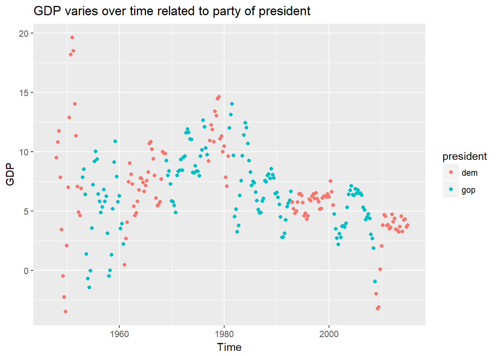

library(tidyverse)## Loading tidyverse: ggplot2
## Loading tidyverse: tibble
## Loading tidyverse: tidyr
## Loading tidyverse: readr
## Loading tidyverse: purrr
## Loading tidyverse: dplyr## Warning: package 'dplyr' was built under R version 3.4.2## Conflicts with tidy packages ----------------------------------------------## filter(): dplyr, stats
## lag(): dplyr, statslibrary(ggridges)## Warning: package 'ggridges' was built under R version 3.4.2library(ggthemes)## Warning: package 'ggthemes' was built under R version 3.4.2library(haven)
library(janitor)
library(knitr)
library(lubridate)##
## Attaching package: 'lubridate'## The following object is masked from 'package:base':
##
## datelibrary(hexbin)## Warning: package 'hexbin' was built under R version 3.4.2library(readxl)Problem 2
pols = read.csv("./fivethirtyeight_datasets/pols-month.csv")
gdp = read.csv("./fivethirtyeight_datasets/GDP.csv")pols = mutate(pols, mon = lubridate::floor_date(as.POSIXct(pols$mon), unit = "month"))
colnames(gdp) = c("mon","gdpvalue")
gdp = mutate(gdp, mon = as.POSIXct(gdp$mon))five38 = right_join(pols, gdp) %>%
mutate(president = ifelse((prez_dem == 1), "dem", "gop"))## Joining, by = "mon"five38$gdpvalue <- as.numeric(as.character(five38$gdpvalue))## Warning: NAs introduced by coercionfive38%>%
group_by(president) %>%
ggplot(aes(x = mon, y = gdpvalue, color = president)) +
geom_point()+
labs(title = "GDP varies over time related to party of president",
x = "Time",
y = "GDP")## Warning: Removed 4 rows containing missing values (geom_point).